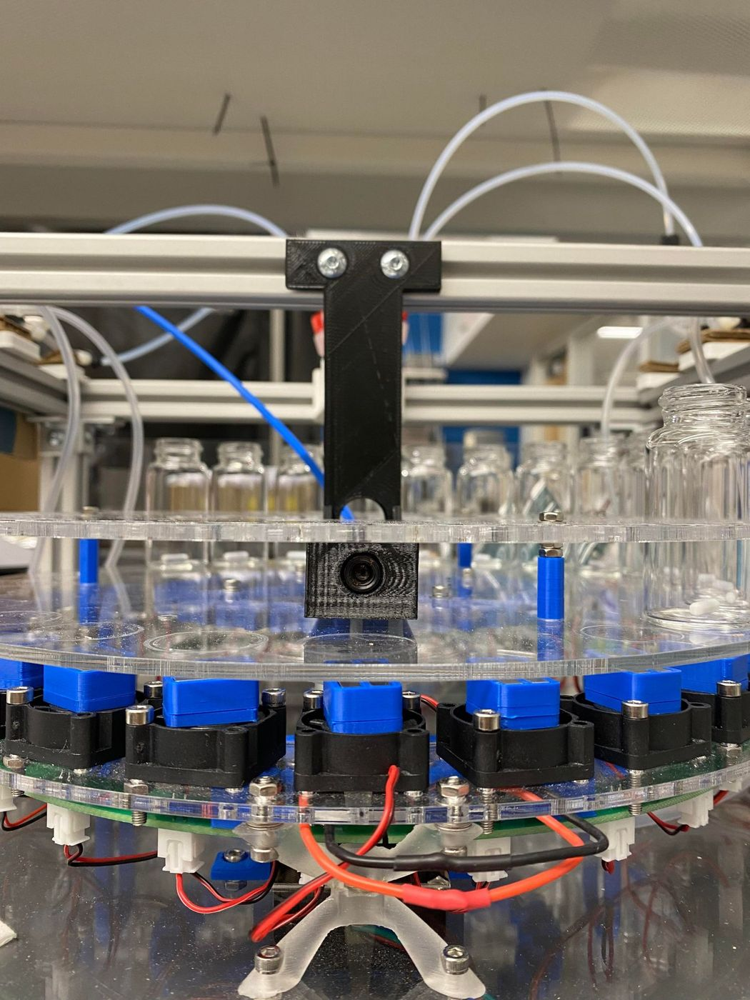

Overview
In the Jayan Lab at Carnegie Mellon I worked on connecting a commercial spectrophotometer to a chemical-handling robot, so samples could be measured as part of an automated workflow.


Fixture design
I designed custom fixtures in SolidWorks and fabricated them with 3D printing and laser cutting to fit the spectrophotometer hardware into the robot's setup.
Integration
I assembled the spectrophotometer system to obtain UV-Vis spectra, then troubleshot the hardware and software issues that came up during integration.